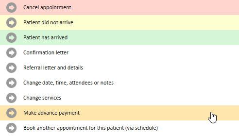
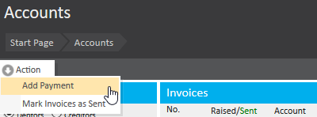
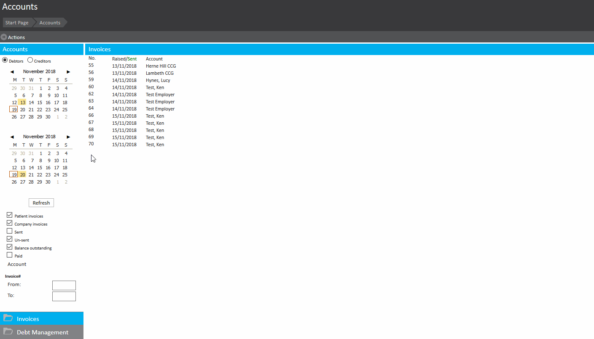
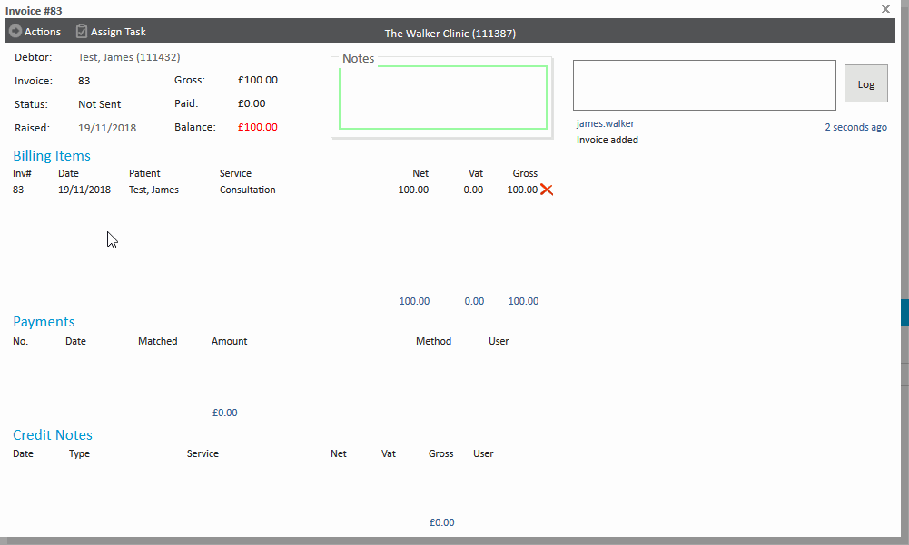

Making an advance payment within Meddbase can be achieved in one of two places. Firstly, if an appointment has already been made but has not yet been arrived, open the appointment and click ‘Make Advance Payment’. From here you may fill in the details as with any other payment.

Alternatively, if the patient has yet to book an appointment, go to the creditor company’s ‘Accounts’ section (If this is your clinic go to Start Page > Accounts, otherwise, find the creditor company in ‘Find Company’ and go to their accounts page from there). Click the ‘Actions’ button in the top left hand corner followed by ‘Add Payment’.

You will be prompted to search for the payer. Simply type the surname of the patient to find their account and select them as the payer. You will once again be presented with the payment dialogue to fill in with the payment details.

Once the invoice has been marked as sent you will be prompted to match any advance payments to the invoice, alternatively this may be achieved by opening an existing sent invoice and clicking ‘Actions’ > ‘Match Advance Payments’.

Choose the amount of this payment you wish to match to the invoice and click ‘Match’ to make this payment. If the patient has more than one unmatched payment on their account, you will be given the option to choose which payment to match from.